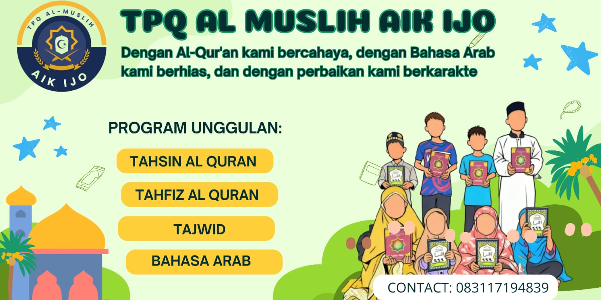

Profil Lembaga Taman Pendidikan Al-Qur'an (TPQ) Al Muslih Aik Ijo

Aik Ijo Bagik Manis, Desa Kembang Kerang Daya, Kec. Aikmel, Kab. Lombok Timur, Prov. Nusa Tenggara Barat
"Dengan Al-Qur'an kami bercahaya, dengan bahasa arab kami berhias, dan dengan perbaikan kami berkarakter."
Segala puji bagi Allah Subhanahu wa Ta'ala atas limpahan rahmat, taufik, dan hidayah-Nya sehingga Taman Pendidikan Al-Qur'an (TPQ) Al Muslih Aik Ijo dapat terus melaksanakan amanah dalam membina generasi Islam yang beriman, bertakwa, dan berakhlakul karimah.
Profil lembaga ini disusun sebagai bentuk dokumentasi resmi mengenai identitas, visi, misi, program, serta kondisi TPQ Al Muslih Aik Ijo. Selain sebagai media informasi bagi masyarakat, profil ini juga diharapkan menjadi bahan pendukung dalam menjalin kerja sama dengan pemerintah, lembaga pendidikan, lembaga sosial, para donatur, dan seluruh pihak yang memiliki kepedulian terhadap pengembangan pendidikan Al-Qur'an.
Latar Belakang
Pendidikan Al-Qur'an merupakan pondasi utama dalam membentuk generasi muslim yang beriman, bertakwa, dan berakhlak mulia. Di tengah perkembangan zaman dan tantangan moral yang semakin kompleks, diperlukan lembaga pendidikan keagamaan yang mampu memberikan pembinaan sejak usia dini agar anak-anak tumbuh menjadi pribadi yang mencintai Al-Qur'an, mengamalkan ajaran Islam, serta memiliki karakter yang luhur.
Berangkat dari kebutuhan tersebut, pada tahun 2025 didirikan Taman Pendidikan Al-Qur'an (TPQ) Al Muslih Aik Ijo sebagai lembaga pendidikan Islam nonformal yang berfokus pada pembelajaran Al-Qur'an, pembinaan akhlak, serta penguatan dasar-dasar ilmu keislaman bagi anak-anak di lingkungan Bagik Manis, Desa Kembang Kerang Daya, Kecamatan Aikmel, Kabupaten Lombok Timur, Provinsi Nusa Tenggara Barat.
Sejak awal berdiri, TPQ Al Muslih Aik Ijo berkomitmen menjadi pusat pembinaan generasi Qur'ani yang tidak hanya mampu membaca Al-Qur'an dengan baik dan benar, tetapi juga memahami serta mengamalkan nilai-nilai Islam dalam kehidupan sehari-hari.
Identitas Lembaga
Visi
"Menjadi lembaga pendidikan Al-Qur'an yang unggul dalam membentuk generasi Qur'ani yang beriman, bertakwa, berakhlakul karimah, berwawasan keislaman, serta mampu mengamalkan nilai-nilai Al-Qur'an dalam kehidupan bermasyarakat."
Misi
- Menyelenggarakan pendidikan Al-Qur'an yang berkualitas sesuai kaidah tajwid.
- Menanamkan nilai-nilai aqidah Ahlus Sunnah wal Jama'ah serta akhlakul karimah kepada seluruh santri.
- Membimbing santri dalam menghafal Al-Qur'an, doa-doa harian, dan praktik ibadah.
- Mengembangkan kemampuan dasar Bahasa Arab sebagai pendukung pemahaman Al-Qur'an.
- Menumbuhkan budaya disiplin, tanggung jawab, serta kecintaan terhadap ilmu agama.
- Menjalin kemitraan dengan orang tua dan masyarakat dalam mendukung pendidikan Islam.
Motto
"Dengan Al-Qur'an kami bercahaya, dengan bahasa arab kami berhias, dan dengan perbaikan kami berkarakter."
Tujuan
- Mencetak generasi yang mampu membaca Al-Qur'an secara tartil.
- Membentuk pribadi muslim yang berakhlak mulia.
- Menumbuhkan kecintaan terhadap Al-Qur'an dan Sunnah.
- Menyiapkan generasi penerus yang memiliki karakter religius, mandiri, dan bertanggung jawab.
Program Pendidikan
Program pembelajaran TPQ Al Muslih Aik Ijo meliputi:
- Tahsin Al-Qur'an
- Tahfiz Al-Qur'an
- Ilmu Tajwid
- Bahasa Arab Dasar
- Hafalan Doa Harian
- Hafalan Surah-surah Pendek
- Praktik Wudhu dan Shalat
Pembelajaran dilaksanakan secara bertahap sesuai kemampuan santri dengan pendekatan yang aktif, edukatif, dan menyenangkan.
Keadaan Lembaga
Saat ini TPQ Al Muslih Aik Ijo memiliki:
- 10 orang santri yang aktif mengikuti pembelajaran.
- 2 orang tenaga pendidik yang membimbing kegiatan belajar mengajar.
Sarana pembelajaran yang tersedia meliputi:
- Ruang belajar
- Whiteboard
- Mushaf Al-Qur'an
- Buku Iqra'
- Buku pembelajaran
- Meja belajar santri
- Karpet belajar
- Perangkat pengeras suara
Meskipun sarana yang tersedia telah mendukung proses pembelajaran dasar, TPQ Al Muslih Aik Ijo masih terus berupaya meningkatkan kualitas fasilitas pendidikan, termasuk pembangunan kembali mushalla sebagai pusat kegiatan ibadah dan pembelajaran.
Komitmen Lembaga
TPQ Al Muslih Aik Ijo berkomitmen untuk:
- Menyelenggarakan pendidikan Al-Qur'an secara profesional dan berkelanjutan.
- Menciptakan lingkungan belajar yang aman, nyaman, dan Islami.
- Menanamkan nilai-nilai kejujuran, kedisiplinan, tanggung jawab, dan kepedulian sosial kepada seluruh santri.
- Menjalin hubungan yang harmonis dengan orang tua, masyarakat, pemerintah, dan para mitra dalam pengembangan pendidikan Islam.
Penutup
TPQ Al Muslih Aik Ijo hadir sebagai bentuk ikhtiar bersama dalam membangun generasi Qur'ani yang mampu menjadi penerus bangsa sekaligus penjaga nilai-nilai Islam.
Besar harapan kami agar seluruh elemen masyarakat, pemerintah, para dermawan, dan lembaga terkait dapat memberikan dukungan demi kemajuan pendidikan Al-Qur'an, sehingga cita-cita membentuk generasi yang berilmu, beriman, dan berakhlak mulia dapat terwujud. Semoga Allah Subhanahu wa Ta'ala senantiasa memberikan keberkahan dan kemudahan dalam setiap langkah perjuangan kita.
"Sebaik-baik kalian adalah orang yang mempelajari Al-Qur'an dan mengajarkannya." (HR. Bukhari)
Ketua TPQ Al Muslih Aik Ijo
Muslihin, S.Pd